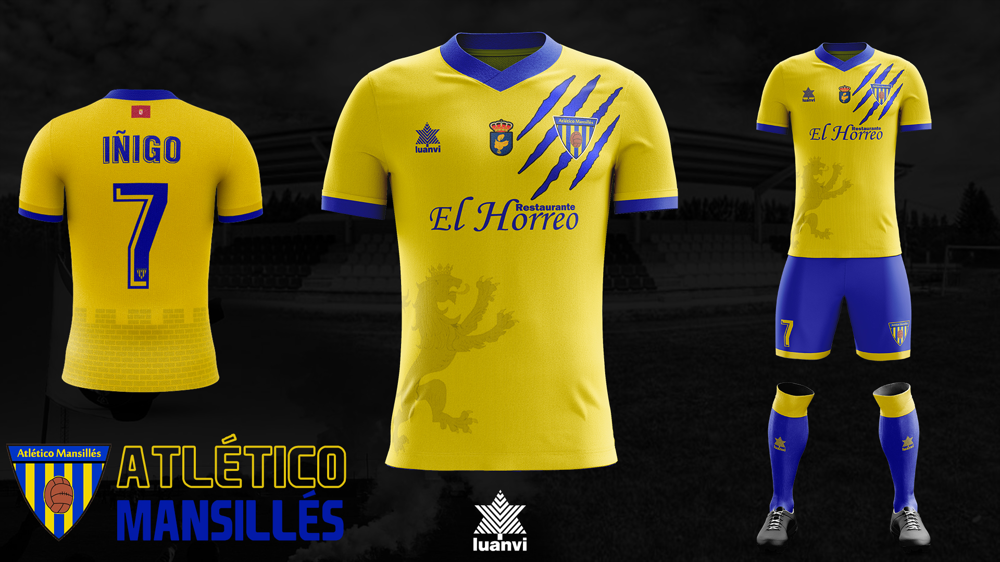

- Diseño -
Barakaldo CF
En 2021 tuve la oportunidad de diseñar la equipación del Barakaldo CF, equipo vasco que actualmente milita en la 2ªRFEF. Dicha equipación se inspira en el estadio local, Lasesarre, con un patrón geométrico a lo largo de la camiseta. Además, cuenta con diferentes referencias al club y a la propia región de Euskadi.
Ver NoticiaAtlético Mansillés
En 2022 contactaron conmigo para diseñar 3 equipaciones para el equipo leones, el Atlético Mansillés. La camiseta se inspira el la región y cuenta con detalles como el León, un zarpazo o la bandera provincial. También tiene protagonismo el pueblo de Mansilla, con el escudo de dicho pueblo y un estampado de su imponente muralla romana.
Ver Noticia 